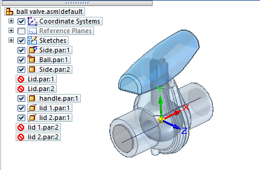
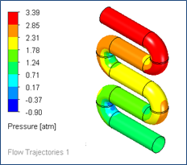
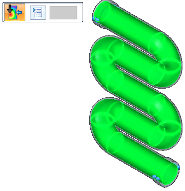
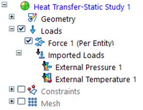
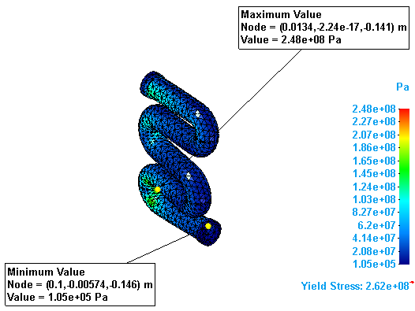

Use fluid flow results in a linear static or thermal study
You can apply the results from a computational fluid dynamics analysis of your design as input to a Solid Edge Simulation structural study for finite element analysis. To do this, you import the flow results file (*.fld) as fluid temperature and pressure loads, and apply them to the corresponding model in an FEA study.
This workflow requires Simcenter FLOEFD for Solid Edge. For more information, and for FLOEFD help and tutorials, see Overview of Simcenter FLOEFD for Solid Edge.
If you want to import a fluid pressure or temperature load from an older version of Simcenter FLOEFD for Solid Edge (before 2020.1), you need to first recreate the FLD files.
To access the Export Results to Simulation command, the Windows environment variable MGC_SIMULATION must exist and be set to any non-empty value.
-
Open a Solid Edge assembly model.
Note:If you open an assembly containing lid parts (LID*.par) added by Simcenter FLOEFD for Solid Edge, we recommend that you exclude the lids from the Solid Edge Simulation study geometry selection set, or suppress the lid parts using the study navigator pane. Lids do not play a role in the analysis, and they generate a Nastran error message while solving.

-
Solve a flow analysis study.
-
Unless your model contains a family of assemblies (FOA), if you previously solved a flow analysis study, you can use the results file (FLD) in your structural analysis.
-
Otherwise, use the commands on the Flow Analysis tab in Solid Edge to define and solve a flow analysis simulation for your assembly model.
When the FLOEFD flow analysis completes, the results plot is displayed for you. The calculated results file (*.fld) associated with the plot is the input to the FEA analysis.
Example:
-
-
Transfer the flow mesh and boundary conditions from the solved flow analysis to Solid Edge Simulation:
-
Select the Flow Analysis tab→Tools group→Export Results to Simulation command
 .
.
A message box reports when the export is successfully completed.
Note:If your assembly document contains a family of assemblies, you must generate the FLD files using the Export Results to Simulation command. A FOA has special file naming conventions, which must be accounted for in the output (*.fld) file names.
-
-
On the Simulation tab, select a previously defined study, or create a new study and make it the active study.
In the Create Study dialog box:
-
Choose a Study type—You can apply flow analysis to any of the Solid Edge Simulation study types listed below. You cannot use external loads in a Normal Modes study.
-
Set Mesh type=Tetrahedral.
These Study types are eligible for external loads:
-
Linear Static
-
Linear Buckling
-
Thermal
-
Steady State Heat Transfer
-
Transient Heat Transfer
-
-
Coupled
-
Steady State Heat Transfer+Linear Static
-
Steady State Heat Transfer+Linear Buckling
-
-
Harmonic Response
-
-
Loads calculated in the flow analysis, such as fluid pressure and fluid temperature, are applied as external loads (imported loads) in FEA structural analysis. To add them to your FEA study:
-
Choose one of the following commands from the Simulation tab→External Loads group:
-
 Import Fluid Pressure
Import Fluid Pressure -
 Import Fluid Temperature
Import Fluid Temperature
Tip:You also can use these shortcut commands on the Simulation study navigator pane→Loads collector:
-
Create External Loads→Import Fluid Pressure
-
Create External Loads→Import Fluid Temperature
-
-
In the Import Solid Edge Flow Results dialog box, click Browse to locate and open the results file (*.fld) for the FloEFD project, and then click OK.
Note:You can select one FLD file per study, even though multiple FLD files may exist for a coupled study of an assembly.
-
On the command bar for the selected external load, click Finish.
-
-
The fluid pressure or temperature results from the selected results file are displayed as highlighted surfaces on the assembly body. You can use the Options button on the command bar to select a different FLD file, or click Finish to continue.

Tip:Fluid pressure is applied as a load normal to the body surface.
Fluid temperature is applied to the entire body.
Similar to structural body loads, you can apply just one external fluid pressure and one external fluid temperature load per study.
The Simulation pane→Loads group→Imported Loads container lists the imported flow results, for example, External Pressure 1, External Temperature 1, or both.
You can change the load name using the Rename command on its shortcut menu.

-
Mesh and then solve the static or thermal study.
The flow analysis results are mapped to the body structure during solution processing.
Tip:In the Simulation Results environment:
-
Use the options on the Color Bar tab→Show group to display the results report header and minimum and maximum node markers and values.

-
Use the Home tab→Output Results group→Create Report command to generate a report of the structural analysis results, and to review the imported loads information in the Loads section of the report.
-